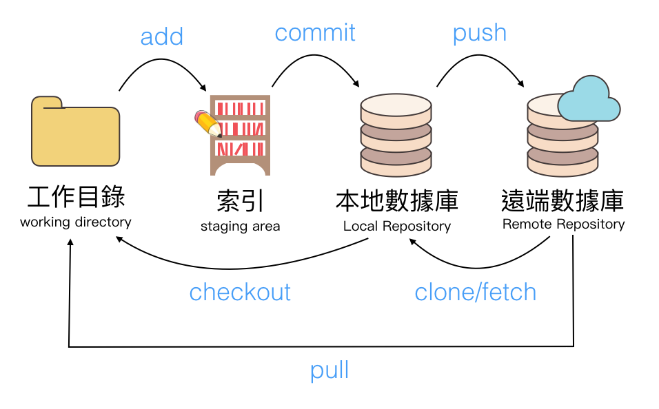
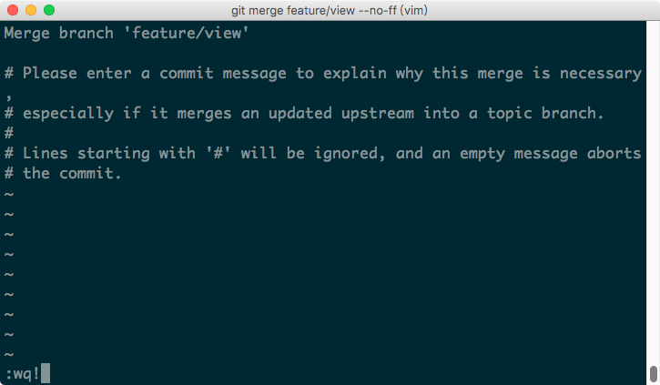
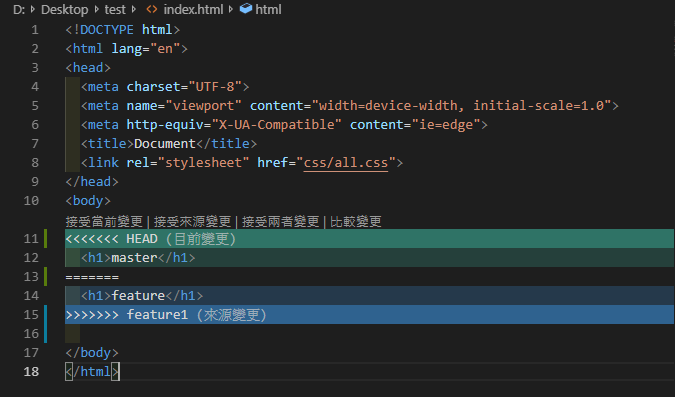

Git 入門
Git 為分散式版本控制系統，最初目的是為更好地管理Linux核心開發而設計
Git 簡介
什麼是「分散式」?
「分散式」版本控制系統也需要一台專用的伺服器，但即使沒有伺服器或網路的情況下也可以在本地端進行版本更新，等待網路或伺服器恢復再上傳更新，不會受到影響，而 Git 大部分也可以在自己電腦完成
什麼是「版本控制系統」 ?
「版本控制系統」指的是會幫你紀錄每次檔案的新增、刪除與修改的狀態變化，並同時記錄修改者的名稱與修改時間，因此檔案出錯時可以輕易找出原因，如果檔案損毀也可以回到上一個紀錄重新來過
速度快、檔案體積小
過去要記錄每次檔案的版本往往是複製整個新的檔案或是只複製每個版本的差異，因此檔案會隨著不斷的修改與更新而使檔案大小日益增加
Git 在版本控制上不同的地方在於使用「快照」（snapshot），如同相機拍照般拍下每式的版本內容，在開啟某個版本時，並非拼湊每次的更新差異，而是各個檔案自動搜尋選擇的版本以前各自最新的檔案版本，因此速度上也較快
常用的終端機指令
目錄切換
輸入 cd 加一個空格後，目錄位置可以複製按右鍵貼上，或是直接將目錄拖曳進終端機
切換到目錄 (絕對路徑)
1 | $ cd /目錄 |
切換到目錄 (相對路徑)
1 | $ cd 目錄 |
往上一層目錄移動
1 | $ cd .. |
切換到使用者的 home 目錄中的 project 裡的 cards 目錄，”~” 表示 home 目錄
1 | $ cd ~/project/cards |
展開列表
1 | $ ls |
檔案與目錄
建立目錄
1 | $ mkdir "目錄名稱" |
建立檔案
1 | $ touch "檔案名稱" |
移除檔案名稱
1 | $ rm "檔案名稱" |
刪除所有的 html 檔案
1 | $ rm *.html |
把檔案 a.html 複製一份成 b.html
1 | $ cp a.html b.html |
把檔案 a.html 更名成 b.html
1 | $ mv a.html b.html |
Git 環境設定
使用者設定
設定使用者的名稱與信箱，每台電腦只有第一次需要設定
1 | $ git config --global user.email "your email" |
查詢使用者設定列表
1 | $ git config --list |
輸入以上指令後會出現許多資訊，如要確認使用者資訊，只須尋找以下兩點
1 | user.name = "your name" |
每個專案設定不同作者
前面新增的 --global 參數為全域設定，如需將特定專案設定不同作者，在專案開始前的 git 設定，加上 --local 參數
1 | $ git config --local user.email "your email" |
查詢 Git 版本
1 | $ git version |
Git 流程圖
基礎的操作方式為先將要追蹤的檔案使用 add 新增索引，接著使用 commit 提交更新紀錄，最後再將更新的紀錄使用 push 上傳至 “遠端數據庫”，更進階的指令後面會再一一介紹

Git 基礎操作
安裝遠端/本地端數據庫
安裝本地端數據庫 : 先使用 cd 指令到要建立數據庫的目錄，再建立數據庫
1 | $ cd |
安裝遠端數據庫 : 先使用 cd 指令到要建立數據庫的目錄，再建立數據庫
1 | $ cd |
建立數據庫後會出現 master (版本紀錄的主軸)
基礎操作流程
將所有檔案加入索引(暫存區)
1 | $ git add . |
以上兩者的差異為何 ?git add . 只會將當下這個目錄與其子目錄加入索引，但這個目錄以外的檔案不會，而 git add--all 就沒有這個問題了，不管在哪執行都會將所有改變加入索引
將單一檔案加入索引
1 | $ git add "檔案名稱" |
查詢狀態，包含新增、刪除與修改
1 | $ git status |
將加入索引的檔案提交更新紀錄
1 | $ git commit -m "更新紀錄名稱" |
更新紀錄查詢
1 | $ git log |
推送數據到遠端數據庫
1 | $ git push |
.gitignore 忽略檔案
新增 .gitignore 檔案
1 | $ mkdir .gitginore |
開啟 .gitignore 檔案，輸入要忽略的檔案
忽略 index.html
1 | index.html |
忽略所有 html
1 | *.html |
忽略整個 css 資料夾
1 | css/ |
工作狀態還原
取消所有檔案的索引
1 | $ git reset HEAD |
取消單一檔案的索引
1 | $ git reset HEAD "檔案名稱" |
還原所有檔案至最新的 commit 狀態
1 | $ git reset --hard |
還原單一檔案至最新的 commit 狀態
1 | $ git checkout "檔案名稱" |
Git 分支(branch)
HEAD
HEAD 代表目前所在的位置，預設的位置為 master，藉由切換 HEAD，可以瀏覽其他的 commit 紀錄
每個 commit 都有自己的代碼，藉由輸入代碼的前四碼或以上可以切換到該 commit
1 | $ git checkout "前四碼" |
切換 HEAD 回到 master
1 | $ git checkout master |
建立分支
在多人協作或已上線程式時，為避免更新時將 master 改壞，所以會先新增 branch 進行版本更新，確認更新內容無誤後再將 branch 合併回 master
1 | $ git branch "分支名稱" |
分支查詢 : 如果新增一支名為 feature 的分支，使用分支查詢後就會出現 feature 與 master
1 | $ git branch |
合併分支
先回到 master ，再合併分支
1 | $ git merge "分支名稱" |
如果 master 與分支都有更新，在合併時會出現以下訊息，輸入 :wq! ，即可離開並自動合併，但分支仍保留原先檔案狀態

解決合併分支衝突
如果再合併分支時，master 與分支在同一行出現不同資料時，就會出現衝突而無法自動合併，這時候只能使用手動合併的方式選擇要保留那些資料，以下是 VS code 出現衝突時的介面

標籤 (tag)
為特定的 commit 加上標籤，例如重要的版本，可以使切換版本上更為輕鬆
新增輕量標籤
1 | $ git tag "標籤名稱" |
新增標示標籤，備註內容外的 “” 需要保留
1 | $ git tag -am "備註內容" "標籤名稱" |
查詢標籤
1 | $ git tag |
查詢詳細標籤
1 | $ git tag -n |
切換到標籤的 commit
1 | $ git checkout "標籤名稱" |
暫存 (stash)
如遇突發狀況時，暫存可將修改的內容先記錄起來，再切換到其他分支作業，作業完後切換回來並還原暫存即可繼續原來的工作
暫時儲存當前目錄
1 | $ git stash |
還原暫存
1 | $ git stash pop |
清除最新暫存
1 | $ git stash drop |
清除全部暫存
1 | $ git stash clear |
瀏覽暫存列表
1 | $ git stash list |
如果有多筆暫存資料，輸入瀏覽指令後會出現以下列表
1 | stash@{0}: WIP on master: 710851f update |
還原最近的指令
1 | $ git stash apply |
還原第 n 筆暫存內容，n 從 0 開始
1 | $ git stash apply stash@{n} |
Git、Github 團隊協作
9-1 推送新的分支到遠端數據庫
查詢遠端數據庫名稱，預設的名稱為 origin
1 | $ git remote |
修改遠端數據庫名稱
1 | $ git remote rename "原名稱(origin)" "新名稱" |
推送分支到遠端數據庫
1 | $ git push "遠端數據庫名稱(預設為 origin)" "分支名稱" |
為什麼不能直接使用 git push ?
因為如果沒有指定遠端主機與要推送的分支，電腦無法確定要推送到遠端主機 (github)、正式主機 (terminal)或測試主機 (本地端)，且預設推送的分支為 master，所以要指定分支名稱
下載遠端數據庫
如果沒有先從遠端數據庫載下最新版本就開始作業，上傳遠端數據庫時會發生衝突，必須先下載最新本進行合併
首先介紹 fetch ，fetch 就是當遠端數據庫進度超前本地端進度時，使用這個指令會從線上將本地端沒有的內容抓下來，一樣也有 HEAD 和 master，但會在前面加上 origin(遠端數據庫預設名稱)，變成 origin/HEAD 和 origin/master
1 | $ git fetch |
接著將抓下來的超前內容合併到本地端分支
1 | $ git merge |
git pull = git fetch + git merge
下載遠端數據庫合併到本地端數據庫
1 | $ git pull |